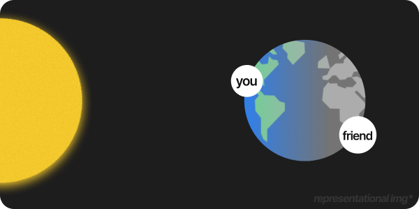
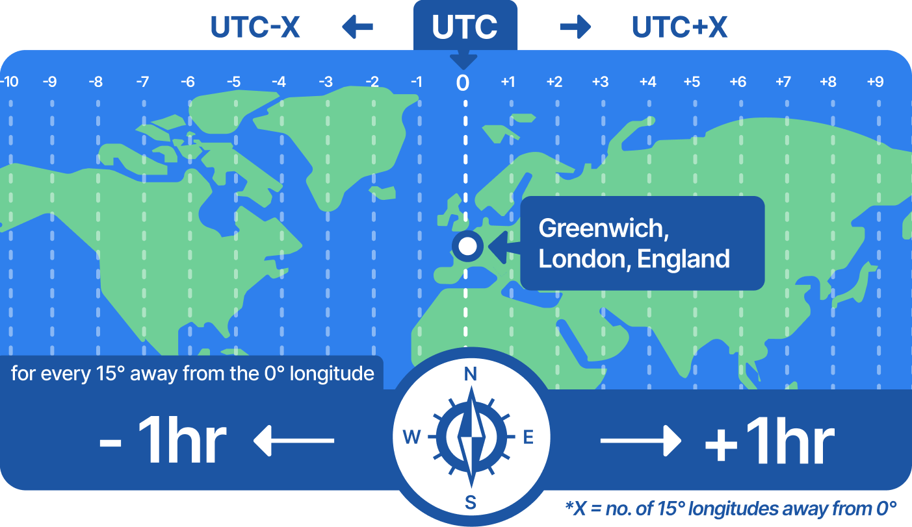

Guess:
0/5
Selected: none
nothing to show yet, guess something first :)
Earth is a ball. The Sun can only light half of the Earth at a time, so noon for you is midnight for someone else.

A timezone is a region where everyone uses the same clock time, which is set so that noon is roughly the time when the sun is highest in the sky.
Timezones ensure that our mornings feel like mornings and nights feel like nights, wherever we live.
The Earth spins 360° on its axis every 24 hours
360° ÷ 24hrs = 15°/hr
So for every 15° you move east or west, the time shifts by an hour.
360° ÷ 15° = 24 zones
So, the Earth is split into 24 timezones.
We need a reference longitude to measure timezones. Thus, the longitude passing through Greenwich, London is considered the :Prime Meridian, the reference line for all timezones.
The reference clock, based on the Prime Meridian, is called :UTC.
Each and every timezone is written as its distance from UTC.
UTC-5:00
5 hours behind UTC<-
->
UTC+5:00
5 hours ahead of UTCThe Sun rises in the east first, so places east of the Prime Meridian are ahead (+) and places west are behind (-).
theoretical

:Some countries have 30 and 45 minute offsets to the standard timezone offsets, e.g. UTC+5:45, UTC+6:30, etc. for better alignment with their local solar time and uniform national clock.
Due to country borders, these straight lines twist around the boundaries so that entire countries don't have to split their time down the middle.
:Solar time and Clock time are different. For example: China is a huge country and should contain upto 5 timezones. But, the whole country uses a single official time (Beijing Time).
Visualize how time changes in various parts of the world.
practical
Hover over the region to view time deviation from UTC. Scroll/Pinch to zoomPrime Meridian is the imaginary line of the 0° longitude that runs from North pole to South pole of Earth. It passes through Greenwich, London.
Coordinated Universal Time (UTC) is the primary time standard which is taken as a reference for the time at various timezones.
The countries and territories having non-standard timezone offsets are:
Solar time is based on the actual position of the sun in the sky whereas Clock time is based on uniform time zones that are man-made. They are different.
As the Earth spins, when the sun slowly rises to the sky and reaches to the absolute highest point above a place, it is known as Solar Noon for that place.
For another place a few miles east from it, the Solar Noon occurs a few minutes earlier.
Having to change time on the clocks for every few miles of distance makes life very hard, thus, we hoomans designed our own time and drew timezones across nations with an agreement that the time is the same for every place lying in the same timezone.